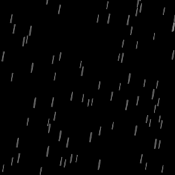

This constant is for use in the functions effect_create_above and effect_create_below, and will create a rain effect as illustrated in the image below:

NOTE: This effect needs no x/y position as it is always drawn at the 0,0 room position to cover the full screen and the size value relates to the number of particles created, not the size of individual particles.
ef_rain;
N/A
switch (global.weather)
{
case 1:
effect_create_above(ef_rain, 0, 0, 1,
c_gray);
break;
case 2:
effect_create_above(ef_snow, 0, 0, 1,
c_gray);
break;
}
The above code will create a rain or snow effect depending on the value of the global variable "weather".